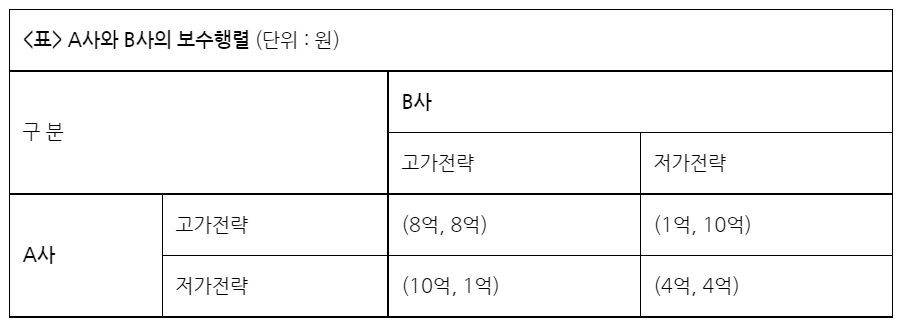

경제 분야의 게임이론(참고: 네이버 지식백과)이란 상호의존적 상황에서의 전략적 의사결정 결과를 밝히는 모형을 말한다. 특정 제품에 대해 시장을 양분하고 있는 복점기업의 경우, 한 기업의 의사결정은 다른 기업에 영향을 미치므로 상호 의존적 상황이 된다. 복점기업의 게임은 의사결정이 동시적이냐, 순차적이냐에 따라 그 양상이 달라진다.

의사결정이 동시에 이루어지는 복점기업의 게임 상황을 보자. 게임에서 얻는 이득을 보수라 하는데, <표>는 두 기업이 각각 얻게 될 보수를 나타낸 것이다. A사와 B사는 제품 가격을 결정할 때, 고가전략과 저가전략 중 하나를 택할 수 있다. A사가 고가전략을 선택할 경우 B사는 고가전략에서 8억, 저가전략에서 10억의 보수를 얻게 되므로 저가전략이 유리하다. A사가 저가전략을 선택할 경우에도 B사는 저가전략이 유리하다.
A사 역시 B사가 어떤 선택을 하든지 저가전략을 선택하는 것이 유리한데, 이처럼 상대방의 전략 선택 여하에 관계없이 각 기업에게 보다 안정적인 보수를 가져다주는 전략을 우월전략이라 한다. 얼핏 보면 8억씩의 보수를 얻을 수 있는 고가전략이 우월전략처럼 보이지만 상대의 전략을 알 수 없기 때문에 이 경우 두 기업은 저가전략에서 우월전략의 균형을 이루게 된다.
기업은 최대의 이윤 창출을 목적으로 하므로, A사와 B사는 우월전략 균형 상태에서 4억씩의 보수를 얻기보다는 고가전략으로 담합함으로써 8억씩의 보수를 얻고자 할 것이다. 따라서 두 기업이 현재 모두 8억씩의 보수를 얻고 있는 상황이라면 이는 담합한 것으로 해석할 수 있다. 이때 A사가 담합을 깨고 저가전략을 선택하면 일시적으로는 10억의 보수를 얻을 수 있지만, B사도 곧바로 저가전략으로 선회할 것이므로, 이후로는 두 기업 모두 4억의 보수를 얻게 된다. 따라서 담합에서 이탈하는 것보다 담합을 유지하는 것이 더 유리하다.
한편 복점기업 중 한 기업이 먼저 의사결정을 하고, 그에 반응하여 다른 기업이 의사결정을 하는 것을 순차게임이라 한다. 순차게임에서 기업은 의사결정 순서와 예상 결과를 나타낸 '의사결정나무'의 분석을 통해 경쟁사의 시장 진입을 저지할 수도 있다. 가령, A사가 특정 지역에 매장을 개장하기로 먼저 결정하고 이어서 B사도 같은 지역에 진입하려 한다고 하자. 이때 A사는 대형 매장을 선택하는 경우와 소형 매장을 선택하는 경우에 따라 얻게 되는 수익률을 분석하여 매장의 규모를 결저하게 된다. A사의 선택 여하에 따라 B사는 시장에 진입하지 못할 수도 있다. 이렇게 '의사결정나무'의 분석을 통해 A사는 B사의 시장 진입을 저지하고 최대의 이윤을 얻는 매장 규모를 선택하게 된다.